Chapter 8. Users and their assignments
This chapter provides an overview of user management, an integral part of Early Warning, Alert and Response System (EWARS). It will help you to understand the different hierarchies of user profiles in EWARS. Further, it will help you perform key actions with ease, such as setting up organizational profiles, creating/editing user accounts, adding assignments, and managing user access and passwords. Through this, you can manage different hierarchies of users effectively in close alignment with the overall goals of EWARS in any given setting.
8.1 Types of user profiles in EWARS
Only registered users can access EWARS. There are three types of user profiles in EWARS (Fig. 8.1).
Fig. 8.1. User profiles in EWARS
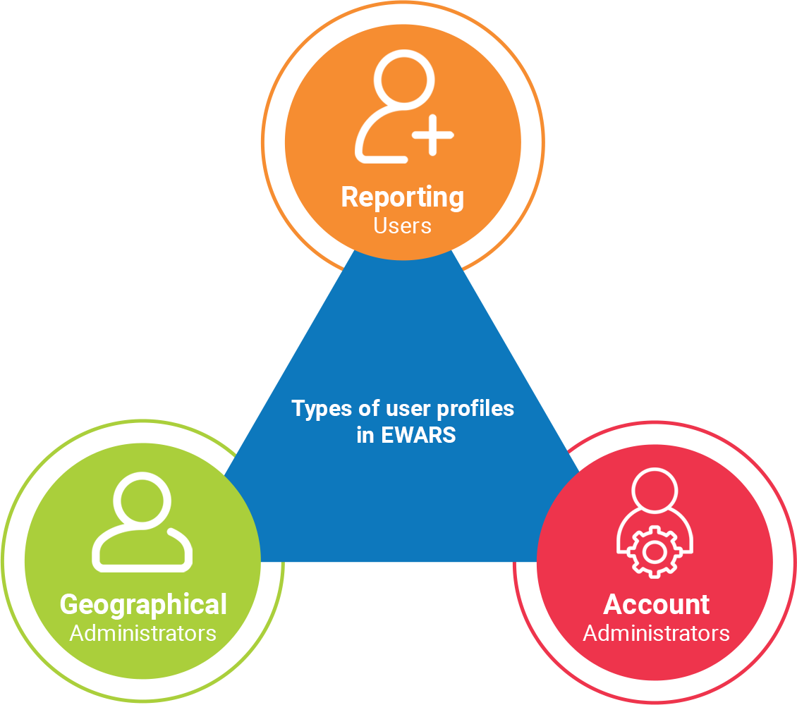
Reporting Users are EWARS users who report data from primary health-care centres (PHCCs), field hospitals, health posts or the community. Reporting Users mostly use EWARS Mobile for reporting. In any context, there are more Reporting Users than other type. For example, if 200 PHCCs are registered under EWARS, there may be 200 or more Reporting Users.
Geographical Administrators manage the early warning, alert and response functions for a specific geographical area – such as a province or district. If you have five provinces in your EWARS, there may be five Geographical Administrators, each overseeing the functions of one province.
Account Administrators are usually one or two individuals who oversee overall EWARS activities encompassing all provinces and districts.
For more information about different types of users, refer to Chapter 1. Overview of EWARS in a box, topic 1.4 Types of users.
EWARS users may belong to different organizations, ministries of health and agencies. Therefore, each user and organization should be registered in EWARS to access and report to it successfully. Registration provides a unique username and password for each user to access EWARS.
The following sections illustrate the key actions under user management.
8.2 Setting up user organizations
Before setting up individual EWARS user profiles, set up organizational profiles for the users in the system. Several agencies and organizations may be involved in managing EWARS in your context. For example, all Reporting Users may belong to the ministry of health or the United Nations Children’s Fund, while all administrative users (Account Administrators and Geographical Administrators) may represent the ministry of health and WHO.
 Note: an organization is mandatory for user setup, so it should be added to the system before adding users. Note: an organization is mandatory for user setup, so it should be added to the system before adding users. |
You can follow the steps below to set up organizations.
- Click on the settings
 icon > click on
icon > click on 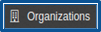
> click on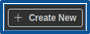
, and the screen below appears:
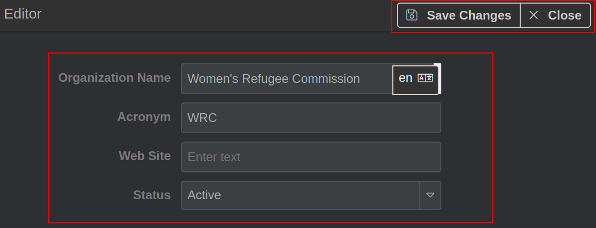
Enter the Organization Name (e.g. Women’s Refugee Commission) > enter the Acronym for the organization (e.g. WRC) > enter the Web Site link > set Status as Active.
Click on Save Change(s).
Repeat the steps above to add other organizations.
Added organizations are visible, as in the screenshot below:
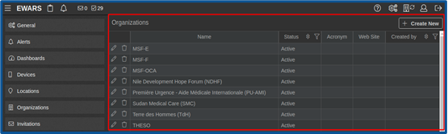
To edit an existing organization, click on the edit
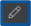
icon > make the required changes. Click on Save Change(s), and a notification appears that the organization is edited.To delete an existing organization, click on the delete icon > click on Confirm, and a notification appears that it is deleted.
8.3 Creating users
Electronic reporting using EWARS Mobile is the most important step in EWARS. During emergencies, it is paramount to register all health facilities, health posts and community members who want to report to the system rapidly.
There are two methods of registering or creating users in the system.
You can create users manually – each Reporting User is created by entering their data manually in the system:
Either they are registered via an invitation to join the system
Or they are registered via system-generated emails.
You can import Reporting User data in bulk – you can add data for a large number of Reporting Users as a single comma-separated values (CSV) file.
To find more about different types of users and their general responsibilities, refer to Chapter 1. Overview of EWARS in a box, topic 1.4 Types of users.
8.3.1 Creating users manually – via invitation
 This m This m |
ethod is best reserved for registering/creating Account Administrators and Geographical Administrators. As they represent a small number of users, sending invitations is not a difficult process. Please note that this method will only work if the person invited to register in the system has a valid email address that they can access easily during an emergency. |
| Note: the Account Administrator decides the role of any users created manually. |
- Select Menu > Users > Create User. Click on the Send Invitation tab, and the screen below appears:
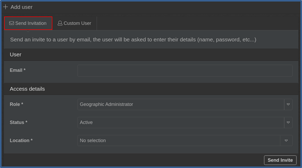
Enter the Email address of the user (e.g. johnsmith@gmail.com) > select the Role for the new user (e.g. Geographical Administrator) > set Status as Active > select the Location to be assigned to the new user (e.g. Aimal Province).
Click on Send Invite. An invitation email is sent to the user. If a user has not received an invitation email, ask them to check their Spam folder.
You can repeat the steps above to create more users via invitation.
An EWARS invitation looks like this:
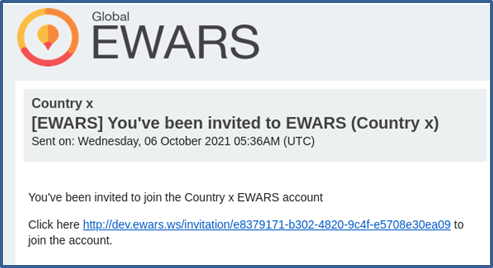
Once the user clicks on the link, the EWARS Invitation screen below appears:
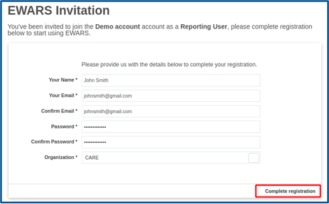
- The user needs to enter the following details:
Name (e.g. John Smith)
Email (e.g. johnsmith@gmail.com)
Confirm Email (e.g. johnsmith@gmail.com)
Password (e.g. mv6u741) (Users can customize the password as there are no set rules for it.)
Confirm Password (e.g. mv6u741)
Organization (e.g. Ministry of Health)
- The user should then click on Complete Registration, and an account is created.
| The em |
ail and password used for registration are used to access the system each time you want to log in. Alert notifications are also sent to the email address specified, if you enable receiving notifications. |
8.3.2 Creating users manually – via system-generated login details
If a user who wishes to have access to EWARS does not have an email address, he/she can proceed as follows.
The system can generate login details, email addresses and passwords for users without using their own valid email addresses. As these emails addresses are not valid, they can only be used to log in to EWARS. Users created in this way are called “custom users”. All system-generated email addresses follow a uniform pattern, and all end with “@ewars.ws”.
| Use th |
is method when you want to generate login details for Reporting Users, who are reporting from PHCCs, health posts and the community. They may not have access to desktops or laptops and may not have valid email addresses – especially during an emergency. |
Follow the steps below to create users using system-generated login details.
- Select Menu > Administration > Users > Create User. Click on the Custom User tab, and the screen below appears:
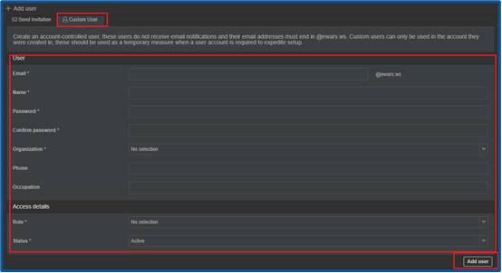
- Populate the details of the user as set out below.
Email [Mandatory]: enter the name/prefix for the email. The domain will automatically be added as @ewars.ws. For example, enter “johndavis” and the email address will be johndavis@ewars.ws. It should be a unique ID or a warning is triggered by the system.
In most instances, the system-generated login details will not be under an individual’s name, but under a reporting site (e.g. a health facility first name, such as Aimal or Bilnula). In these cases, the system-generated email address would be aimal@ewars.ws or bilnula@ewars.ws. Any clinician, nurse or reporting officer can report data under the health facility using these login details. You will, however, lose the resolution of knowing which data were sent by which individual.
Name [Mandatory]: enter the name of the user (e.g. John Davis or Birigo health post).
Password [Mandatory]: enter a password that must be at least six characters long and must contain one number or non-standard character (e.g. “john66@d”).
Confirm password [Mandatory]: re-enter the password for confirmation.
Organization [Mandatory]: select the organization of the custom user (e.g. International Rescue Committee).
Phone: enter the phone number of the user.
Occupation: enter an occupation of the user.
Role [Mandatory]: select the role of the user (e.g. Reporting User).
Status [Mandatory]: set status as active.
- Click on Add user, and the user is created.
Repeat the steps above to create more users via system-generated login details.
8.3.3 Creating users in bulk
You can register a large number of EWARS users at once by uploading user details as a CSV file. This saves time during emergencies.
| Use th |
is method when you are creating a large number of Reporting Users. It would be best to have all the necessary details ready in a CSV file before importing the data. Download the Template from the system, as shown below to create your CSV file. |
Follow the steps below to create users in bulk.
Step 1. Select Menu > Administration > Users. Click on Import Users, and the screen below appears:
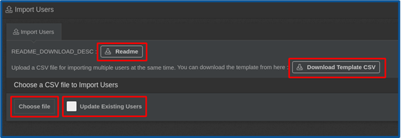
Step 2. Click on Download Template CSV and open it in Excel:
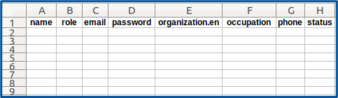
Step 3. Populate the CSV file columns, as shown below:
Name [Mandatory]: enter the name of the user (e.g. User A).
Role [Mandatory]: enter the role for the new user (e.g. Reporting User).
Email [Mandatory]: enter the email address of the user (e.g. usera@gmail.com). If you want to create a user with a system-generated email address, use the user id with @ewars.ws (e.g. “userx@ewars.ws”).
Password [Mandatory]: enter a password for the user (e.g. “mb@7fg1”).
Organization.en [Mandatory]: enter the organization name in English. If you want to add a name in French, change the column name from Organization.en to Organization.fr. Here, “en” and “fr” denote the standard language codes. For more information about codes for other languages, click on the settings
 icon > click on
icon > click on  .
.
| Note: the organization must exist in the system, or the import will be unsuccessful. |
Occupation: enter the occupation of the user.
Phone: enter the phone number of the user.
Status: keep the status column blank. By default, the status is set as ACTIVE. If you want to create a user with inactive status, add “INACTIVE” to the status column:
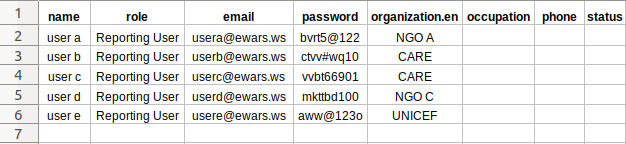
| Note: please be mindful of the typographic use of uppercase and lowercase letters, and correct spellings of the organizations, as these will affect the import process. |
Step 4. Click on
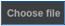
> browse and select the prepared CSV file. Status_of_imported_records.csv file is downloaded.Step 5. Analyse the Status_of_imported_records.csv file as below:
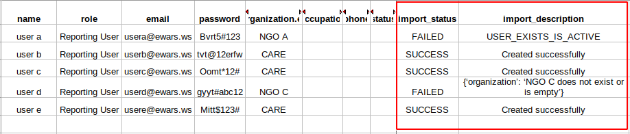
The downloaded file is the same as the uploaded file with two additional columns: import_status and import_description.
The import_status column shows the success or failure of the imported records, with reasons for any failures indicated in the import_description column.
As shown in the above screenshot, three users have been successfully imported and two users have failed to import. For “user a”, the import description states “USER_EXISTS_IS_ACTIVE”, which means that “user a” with the specified email address already exists in the system.
Similarly, for “user d”, the import description states “organization: NGO C does not exist or is empty”, which means the provided organization is not available in the system. You therefore need to create the organization (“NGO C” in this example) first and then import “user d”.
To reimport users that could not be imported during the first attempt, make the appropriate corrections to the failed user details according to the instructions in the import_description column, and import it again.
Step 6. After creating all users, select Menu > Users, and the imported users appear, as shown below:
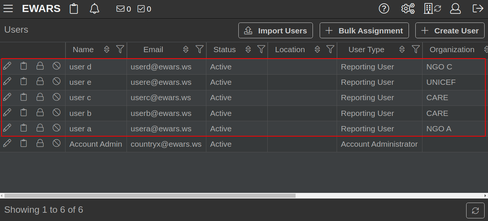
8.4 Editing users
In EWARS, you can edit the login information of users with system-generated email addresses, but you cannot edit user details with valid personal email addresses: that is the responsibility of the users themselves.
You can edit user details individually or in bulk.
8.4.1 Editing user details individually
- Select Menu > Users. Click on the edit
 icon > make the desired changes. Click on Save Change(s).
icon > make the desired changes. Click on Save Change(s).
8.4.2 Editing user details in bulk
This function allows you to edit details including name, role, password, organization, occupation, phone and status, but not email address. The email address is the user identifier and is a mandatory column.
| Some r |
eporting sites may change ownership, name or phone numbers as time passes. A process to edit user details in the system without disrupting their access is therefore essential. |
Follow the steps below to edit user details in bulk.
Step 1. Select Menu > Administration > Users > Import Users. Click on Download Template CSV and open it in Excel:
Step 2. Populate the details in the CSV file, including the user email addresses, as shown below:
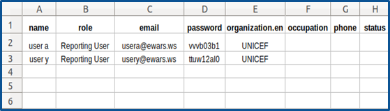
The system will match provided email addresses with existing users’ email addresses. If the email address matches, the user details are updated with the details provided in the relevant columns in the file.
Step 3. Click on > click on
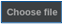
> browse and select the prepared CSV file. The Status_of_imported_records.csv file is downloaded.Step 4. Analyse the Status_of_imported_records.csv file as below:
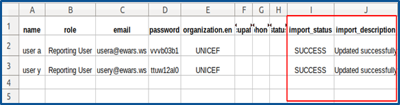
The downloaded file is the same as the uploaded file with two additional columns: import_status and import_description.
The import_status column shows the success or failure of the imported records, with reasons for any failures indicated in the import_description column.
If some of the user details are not updated successfully, make the appropriate corrections to the failed user details in the CSV file according to the instructions in the import_description column, and import it again.
8.5 User assignments
Assignments refer to the reporting forms each location is responsible for reporting to EWARS. One location can have multiple assignments.
For example, Dondo PHCC has two assignments:
submit a weekly reporting form every Monday morning for the previous completed epi week
submit an immediate notification form every time an immediately notifiable disease is seen at the PHCC.
If an outbreak is ongoing, they may also have outbreak line lists as assignments.
| Note: Geographical Administrators and Account Administrators do not have assignments under them. |
In EWARS, Reporting Users are not directly associated with locations. Instead, once you assign a form to a user, the location is associated with the user indirectly. When you report the form, the list of associated locations appears for selection.
There are three methods to add assignments to users.
You can add assignments to Reporting Users manually.
You can add assignments in bulk via a CSV file.
You can add assignments to existing users with other assignments.
8.5.1 Adding assignments to Reporting Users manually
- Select Menu > Users. Click on the folder
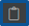
icon of the Reporting User (e.g. user d).
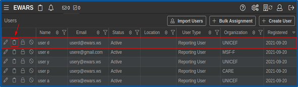
- Click on Add New Assignment, and the screen below appears:
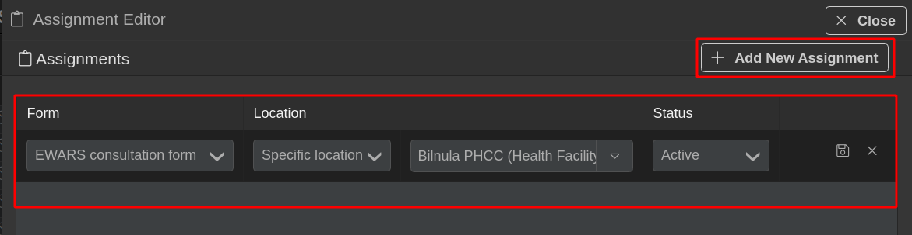
Select the Form.
Select the Location of the Assignment from the drop-down menu.
Specific location: this indicates that the user must report from the location provided in the next drop-down menu (e.g. Bilnula PHCC).
Location group this indicates that the user is limited to reporting from any of the locations in the location group provided in the next drop-down menu.
Reporting locations within: this indicates that the user must report from any of the locations under the location provided in the next drop-down menu. Thus, if a province is selected, the user can report from any of the health facilities situated within that province (at any geographical level). In this instance, every time the Reporting User logs in to EWARS Mobile to report under this form, he or she is presented with a list of reporting locations within the administrative boundary chosen. The Reporting User can select anyone to report at a given time. This enables one Reporting User with a mobile phone or web access to report for multiple sites, as those sites may not have the required equipment or facilities.
Set Status as Active. If the status is set as Inactive, reporting cannot be done.
Click on the save icon, and the assignment is added.
You can repeat the steps above to add more such assignments.
8.5.1.1 Editing or deleting an assignment
| You ca |
n modify assignments to suit your needs. If an outbreak is declared, you can add line list assignments to Reporting Users, and you can remove such assignments when the outbreak is over. |
To edit an assignment, follow the steps below.
- Select Menu > Users. Click on the folder icon of the Reporting User (e.g. user d). Click on the edit
 icon of the Assignment, and the row opens in edit mode. Make the desired changes > click on the save icon, and the changes are updated.
icon of the Assignment, and the row opens in edit mode. Make the desired changes > click on the save icon, and the changes are updated.
To delete an assignment, follow the steps below.
- Select Menu > Users. Click on the folder icon of the Reporting User (e.g. user d). Click on the delete icon of the Assignment > click on Confirm, and the Assignment is deleted.
8.5.2 Adding assignments in bulk via a CSV file
| When y |
ou have a large number of reporting sites and users, it can be time-consuming to add assignments one by one. Have a CSV file ready with user details to import to the system for efficiency. Use the CSV template to create your CSV file for import. |
You can add assignments in bulk by uploading a CSV file populated with assignment details. Each row in the file indicates one assignment – i.e. a reporting form assigned to a user at a location.
Follow the steps below to import assignments in bulk.
Step 1. Select Menu > Users > Bulk Assignment, and the screen below appears:
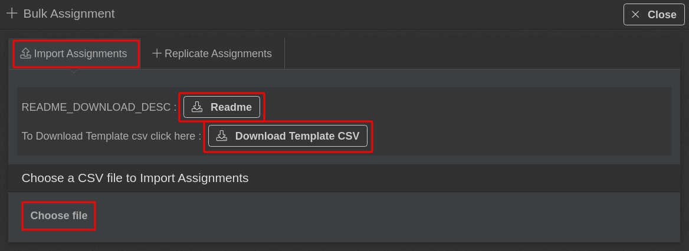
Step 2. Click on Download Template CSV and open it in Excel:
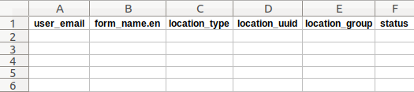
Step 3. Populate the CSV file columns as shown below:
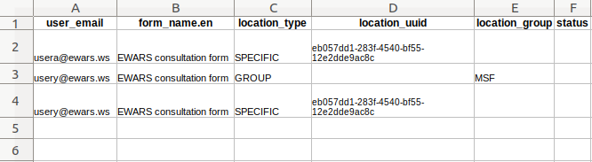
user_email [Mandatory]: enter the email address of the user to whom you want to assign the form. For an Assignment to be added successfully, the user’s status must be Active, and the email address entered must match the user’s email address.
form_name.en [Mandatory]: enter the form name in English. If you want to add a name in French, change the column name from “form_name.en” to “form_name.fr”.
Note: for an assignment to be added successfully, the form status needs to be Active, and it must be enabled for Location-Based Reporting.
- location_type [Mandatory]: enter the location type as “SPECIFIC” or “LOCATION_WITHIN” OR “GROUP”.
SPECIFIC: the form is assigned to a specific location, which is provided in the location_uuid column. Enter the location universally unique identifier (UUID) in the location_uuid column.
icon to expand the location hierarchy > click on the location name, and the location details including the UUID are at the right-hand side.
LOCATION_WITHIN: the form is assigned to locations that exist under the location provided in the location_uuid column. Enter the location UUID in the location_uuid column.
GROUP: the form is assigned to the group provided in the location_group column. Enter the group name in the location_group column.
- Status: keep the status column blank. By default, the Status is set as ACTIVE. If you want the assignment to be INACTIVE, set the status column value as “INACTIVE”.
Step 4. Click on
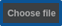
> browse and select the prepared CSV file. The Status_of_imported_records.csv file is downloaded.Step 5. Analyse the Status_of_imported_records.csv file as below:
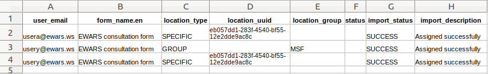
The downloaded file is the same as the uploaded file with two additional columns: import_status and import_description.
The import_status column shows the success or failure of the imported records, with reasons for any failures indicated in the import_description column.
If an assignment has failed to import successfully, make corrections to the unsuccessful rows of the CSV file, and import it again.
8.5.3 Adding assignments to existing users with other assignments
The replicate assignments feature is used in a scenario where a form “X” is assigned to users at one location, and a new form “Y” needs to be assigned to those users at the same location.
| You ma |
y want to add a second or third (or fourth) assignment to a user who is already assigned with one report – for example, all PHCCs in Aimal Province are assigned with a weekly EWARS reporting form, and you want to assign a second form to them (e.g. an immediate reporting form). |
To assign the new form “Y”, follow the steps below.
- Select Menu > Users > Bulk Assignment > Replicate Assignments, and the screen below appears:
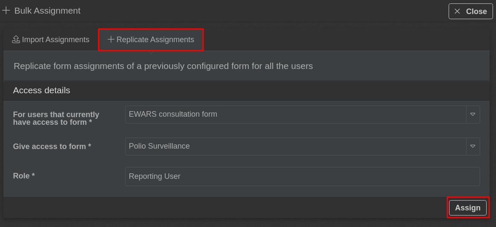
Select the form that was previously assigned to the users from the For users that currently have access to form drop-down menu.
Select the new form that is to be assigned to all users of the previous form from the Give access to form drop-down menu. By default, Role is set as Reporting User.
Click on Assign > click on Confirm, and the form is assigned.
8.6 Changing a user password
In EWARS, as an Account Administrator, you can change the passwords of users created with a system-generated email address, but you can’t change passwords of users created with a valid personal email address.
| Report |
ing sites, PHCCs, health posts and similar may have a high turnaround of staff/users, and the process of transferring EWARS login details between old and new users may therefore not be very smooth. This feature enables the Account Administrator to change passwords without any hassle. |
Follow the below steps to change a password for a user with a system-generated email address.
- Select Menu > Administration > Users. Click on the
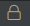
icon, and the Update Password screen below appears:
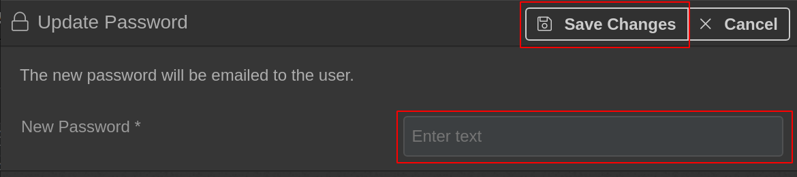
- Enter the new password. Click on Save Change(s), and the password is changed.
8.7 Revoking and reinstating user access
Revoking access means the user will not be able to use their account: their user status will be access revoked and they will not be able to log in into the system. User access can also be reinstated to make the user active again.
| Some G |
eographical Administrators or Reporting Users leave the system when they exit the emergency response. As an Account Administrator, you can revoke or reinstate the access of any user. |
To revoke user access, follow the steps below:
- Select Menu > Users. Click on the
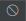
icon of the user (e.g. John Smith) > click on Confirm, and access is revoked.
To reinstate user access after it has been revoked, follow the steps below:
- Select Menu > Users. Click on the icon of the revoked user (e.g. John Smith) > click on Confirm, and access is reinstated.
The following chapter will help you manage your profile, tasks and notifications.